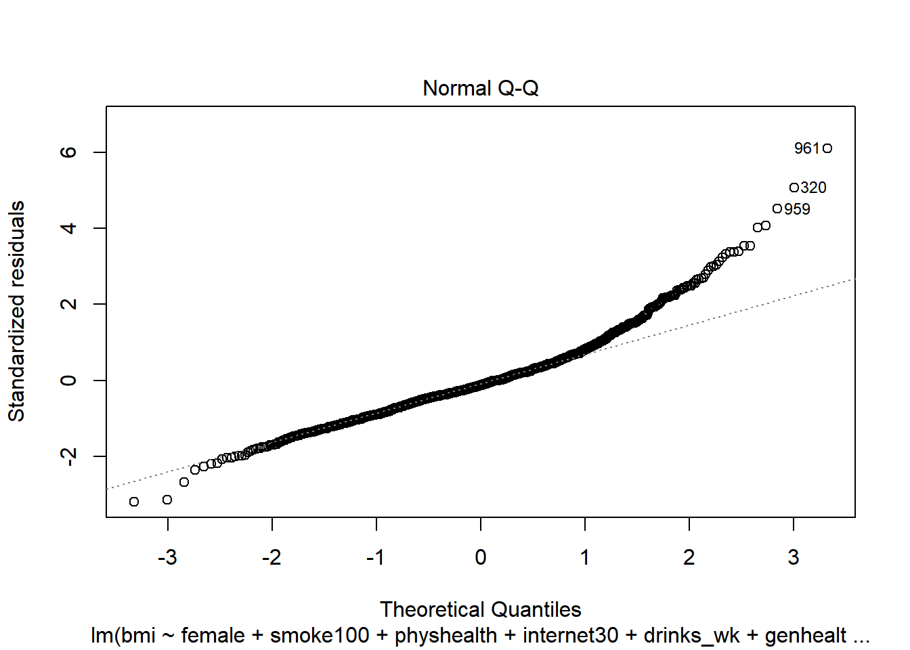

Chapter 8 Analysis of Covariance with the SMART data
In this chapter, we’ll work with the smart_cle1_sh data file again.
smart_cle1_sh <- readRDS(here("data", "smart_cle1_sh.Rds"))8.1 A New Small Study: Predicting BMI
We’ll begin by investigating the problem of predicting bmi, at first with just three regression inputs: sex, smoke100 and physhealth, in our smart_cle1_sh data set.
- The outcome of interest is
bmi. - Inputs to the regression model are:
female= 1 if the subject is female, and 0 if they are malesmoke100= 1 if the subject has smoked 100 cigarettes in their lifetimephyshealth= number of poor physical health days in past 30 (treated as quantitative)
8.1.1 Does female predict bmi well?
8.1.1.1 Graphical Assessment
ggplot(smart_cle1_sh, aes(x = female, y = bmi)) +
geom_point()Not so helpful. We should probably specify that female is a factor, and try another plotting approach.
ggplot(smart_cle1_sh, aes(x = factor(female), y = bmi)) +
geom_boxplot()The median BMI looks a little higher for males. Let’s see if a model reflects that.
8.2 c8_m1: A simple t-test model
c8_m1 <- lm(bmi ~ female, data = smart_cle1_sh)
c8_m1
Call:
lm(formula = bmi ~ female, data = smart_cle1_sh)
Coefficients:
(Intercept) female
28.4941 -0.2442 summary(c8_m1)
Call:
lm(formula = bmi ~ female, data = smart_cle1_sh)
Residuals:
Min 1Q Median 3Q Max
-14.950 -4.060 -1.024 2.740 42.066
Coefficients:
Estimate Std. Error t value Pr(>|t|)
(Intercept) 28.4941 0.2965 96.090 <2e-16 ***
female -0.2442 0.3850 -0.634 0.526
---
Signif. codes: 0 '***' 0.001 '**' 0.01 '*' 0.05 '.' 0.1 ' ' 1
Residual standard error: 6.367 on 1131 degrees of freedom
Multiple R-squared: 0.0003554, Adjusted R-squared: -0.0005284
F-statistic: 0.4021 on 1 and 1131 DF, p-value: 0.5261confint(c8_m1) 2.5 % 97.5 %
(Intercept) 27.9123220 29.0759609
female -0.9996392 0.5113054The model suggests, based on these 896 subjects, that
- our best prediction for males is BMI = 28.36 kg/m2, and
- our best prediction for females is BMI = 28.36 - 0.85 = 27.51 kg/m2.
- the mean difference between females and males is -0.85 kg/m2 in BMI
- a 95% confidence (uncertainty) interval for that mean female - male difference in BMI ranges from -1.69 to -0.01
- the model accounts for 0.4% of the variation in BMI, so that knowing the respondent’s sex does very little to reduce the size of the prediction errors as compared to an intercept only model that would predict the overall mean (regardless of sex) for all subjects.
- the model makes some enormous errors, with one subject being predicted to have a BMI 38 points lower than his/her actual BMI.
Note that this simple regression model just gives us the t-test.
t.test(bmi ~ female, var.equal = TRUE, data = smart_cle1_sh)
Two Sample t-test
data: bmi by female
t = 0.63413, df = 1131, p-value = 0.5261
alternative hypothesis: true difference in means is not equal to 0
95 percent confidence interval:
-0.5113054 0.9996392
sample estimates:
mean in group 0 mean in group 1
28.49414 28.24997 8.3 c8_m2: Adding another predictor (two-way ANOVA without interaction)
When we add in the information about smoke100 to our original model, we might first picture the data. We could look at separate histograms,
ggplot(smart_cle1_sh, aes(x = bmi)) +
geom_histogram(bins = 30) +
facet_grid(female ~ smoke100, labeller = label_both)
or maybe boxplots?
ggplot(smart_cle1_sh, aes(x = factor(female), y = bmi)) +
geom_boxplot() +
facet_wrap(~ smoke100, labeller = label_both)ggplot(smart_cle1_sh, aes(x = female, y = bmi))+
geom_point(size = 3, alpha = 0.2) +
theme_bw() +
facet_wrap(~ smoke100, labeller = label_both)OK. Let’s try fitting a model.
c8_m2 <- lm(bmi ~ female + smoke100, data = smart_cle1_sh)
c8_m2
Call:
lm(formula = bmi ~ female + smoke100, data = smart_cle1_sh)
Coefficients:
(Intercept) female smoke100
28.0265 -0.1342 0.8555 This new model predicts only four predicted values:
bmi= 28.035 if the subject is male and has not smoked 100 cigarettes (sofemale= 0 andsmoke100= 0)bmi= 28.035 - 0.144 = 27.891 if the subject is female and has not smoked 100 cigarettes (female= 1 andsmoke100= 0)bmi= 28.035 + 0.859 = 28.894 if the subject is male and has smoked 100 cigarettes (sofemale= 0 andsmoke100= 1), and, finallybmi= 28.035 - 0.144 + 0.859 = 28.750 if the subject is female and has smoked 100 cigarettes (so bothfemaleandsmoke100= 1).
Another way to put this is that for those who have not smoked 100 cigarettes, the model is:
bmi= 28.035 - 0.144female
and for those who have smoked 100 cigarettes, the model is:
bmi= 28.894 - 0.144female
Only the intercept of the bmi-female model changes depending on smoke100.
summary(c8_m2)
Call:
lm(formula = bmi ~ female + smoke100, data = smart_cle1_sh)
Residuals:
Min 1Q Median 3Q Max
-15.448 -3.972 -0.823 2.774 41.678
Coefficients:
Estimate Std. Error t value Pr(>|t|)
(Intercept) 28.0265 0.3620 77.411 <2e-16 ***
female -0.1342 0.3875 -0.346 0.7291
smoke100 0.8555 0.3814 2.243 0.0251 *
---
Signif. codes: 0 '***' 0.001 '**' 0.01 '*' 0.05 '.' 0.1 ' ' 1
Residual standard error: 6.356 on 1130 degrees of freedom
Multiple R-squared: 0.004788, Adjusted R-squared: 0.003027
F-statistic: 2.718 on 2 and 1130 DF, p-value: 0.06642confint(c8_m2) 2.5 % 97.5 %
(Intercept) 27.3161140 28.7368281
female -0.8944773 0.6259881
smoke100 0.1072974 1.6037825The slopes of both female and smoke100 have confidence intervals that are completely below zero, indicating that both female sex and smoke100 appear to be associated with reductions in bmi.
The R2 value suggests that just under 3% of the variation in bmi is accounted for by this ANOVA model.
In fact, this regression (on two binary indicator variables) is simply a two-way ANOVA model without an interaction term.
anova(c8_m2)Analysis of Variance Table
Response: bmi
Df Sum Sq Mean Sq F value Pr(>F)
female 1 16 16.301 0.4036 0.52538
smoke100 1 203 203.296 5.0330 0.02506 *
Residuals 1130 45644 40.393
---
Signif. codes: 0 '***' 0.001 '**' 0.01 '*' 0.05 '.' 0.1 ' ' 18.4 c8_m3: Adding the interaction term (Two-way ANOVA with interaction)
Suppose we want to let the effect of female vary depending on the smoke100 status. Then we need to incorporate an interaction term in our model.
c8_m3 <- lm(bmi ~ female * smoke100, data = smart_cle1_sh)
c8_m3
Call:
lm(formula = bmi ~ female * smoke100, data = smart_cle1_sh)
Coefficients:
(Intercept) female smoke100 female:smoke100
28.2690 -0.5064 0.4119 0.7536 So, for example, for a male who has smoked 100 cigarettes, this model predicts
bmi= 28.275 - 0.513 (0) + 0.419 (1) + 0.746 (0)(1) = 28.275 + 0.419 = 28.694
And for a female who has smoked 100 cigarettes, the model predicts
bmi= 28.275 - 0.513 (1) + 0.419 (1) + 0.746 (1)(1) = 28.275 - 0.513 + 0.419 + 0.746 = 28.927
For those who have not smoked 100 cigarettes, the model is:
bmi= 28.275 - 0.513female
But for those who have smoked 100 cigarettes, the model is:
bmi= (28.275 + 0.419) + (-0.513 + 0.746)female, or ,,,bmi= 28.694 - 0.233female
Now, both the slope and the intercept of the bmi-female model change depending on smoke100.
summary(c8_m3)
Call:
lm(formula = bmi ~ female * smoke100, data = smart_cle1_sh)
Residuals:
Min 1Q Median 3Q Max
-15.628 -3.938 -0.829 2.759 41.879
Coefficients:
Estimate Std. Error t value Pr(>|t|)
(Intercept) 28.2690 0.4396 64.301 <2e-16 ***
female -0.5064 0.5446 -0.930 0.353
smoke100 0.4119 0.5946 0.693 0.489
female:smoke100 0.7536 0.7750 0.972 0.331
---
Signif. codes: 0 '***' 0.001 '**' 0.01 '*' 0.05 '.' 0.1 ' ' 1
Residual standard error: 6.356 on 1129 degrees of freedom
Multiple R-squared: 0.005621, Adjusted R-squared: 0.002979
F-statistic: 2.127 on 3 and 1129 DF, p-value: 0.09507confint(c8_m3) 2.5 % 97.5 %
(Intercept) 27.4063783 29.1315563
female -1.5749026 0.5621793
smoke100 -0.7547605 1.5786121
female:smoke100 -0.7670239 2.2742178In fact, this regression (on two binary indicator variables and a product term) is simply a two-way ANOVA model with an interaction term.
anova(c8_m3)Analysis of Variance Table
Response: bmi
Df Sum Sq Mean Sq F value Pr(>F)
female 1 16 16.301 0.4035 0.52539
smoke100 1 203 203.296 5.0327 0.02507 *
female:smoke100 1 38 38.194 0.9455 0.33107
Residuals 1129 45606 40.395
---
Signif. codes: 0 '***' 0.001 '**' 0.01 '*' 0.05 '.' 0.1 ' ' 1The interaction term doesn’t change very much here. Its uncertainty interval includes zero, and the overall model still accounts for just under 3% of the variation in bmi.
8.5 c8_m4: Using female and physhealth in a model for bmi
ggplot(smart_cle1_sh, aes(x = physhealth, y = bmi, color = factor(female))) +
geom_point() +
guides(col = FALSE) +
geom_smooth(method = "lm", se = FALSE) +
facet_wrap(~ female, labeller = label_both) `geom_smooth()` using formula 'y ~ x'Does the difference in slopes of bmi and physhealth for males and females appear to be substantial and important?
c8_m4 <- lm(bmi ~ female * physhealth, data = smart_cle1_sh)
summary(c8_m4)
Call:
lm(formula = bmi ~ female * physhealth, data = smart_cle1_sh)
Residuals:
Min 1Q Median 3Q Max
-18.069 -3.825 -0.624 2.516 38.526
Coefficients:
Estimate Std. Error t value Pr(>|t|)
(Intercept) 27.92386 0.32196 86.731 < 2e-16 ***
female -0.30335 0.42346 -0.716 0.474
physhealth 0.13700 0.03277 4.180 3.14e-05 ***
female:physhealth -0.01203 0.04191 -0.287 0.774
---
Signif. codes: 0 '***' 0.001 '**' 0.01 '*' 0.05 '.' 0.1 ' ' 1
Residual standard error: 6.262 on 1129 degrees of freedom
Multiple R-squared: 0.03486, Adjusted R-squared: 0.03229
F-statistic: 13.59 on 3 and 1129 DF, p-value: 1.027e-08Does it seem as though the addition of physhealth has improved our model substantially over a model with female alone (which, you recall, was c8_m1)?
Since the c8_m4 model contains the c8_m1 model’s predictors as a subset and the outcome is the same for each model, we consider the models nested and have some extra tools available to compare them.
- I might start by looking at the basic summaries for each model.
glance(c8_m4)# A tibble: 1 x 12
r.squared adj.r.squared sigma statistic p.value df logLik AIC BIC
<dbl> <dbl> <dbl> <dbl> <dbl> <dbl> <dbl> <dbl> <dbl>
1 0.0349 0.0323 6.26 13.6 1.03e-8 3 -3684. 7378. 7403.
# ... with 3 more variables: deviance <dbl>, df.residual <int>, nobs <int>glance(c8_m1)# A tibble: 1 x 12
r.squared adj.r.squared sigma statistic p.value df logLik AIC BIC
<dbl> <dbl> <dbl> <dbl> <dbl> <dbl> <dbl> <dbl> <dbl>
1 0.000355 -0.000528 6.37 0.402 0.526 1 -3704. 7414. 7429.
# ... with 3 more variables: deviance <dbl>, df.residual <int>, nobs <int>- The R2 is much larger for the model with
physhealth, but still very tiny. - Smaller AIC and smaller BIC statistics are more desirable. Here, there’s little to choose from, so
c8_m4looks better, too. - We might also consider a significance test by looking at an ANOVA model comparison. This is only appropriate because
c8_m1is nested inc8_m4.
anova(c8_m4, c8_m1)Analysis of Variance Table
Model 1: bmi ~ female * physhealth
Model 2: bmi ~ female
Res.Df RSS Df Sum of Sq F Pr(>F)
1 1129 44265
2 1131 45847 -2 -1582.4 20.18 2.448e-09 ***
---
Signif. codes: 0 '***' 0.001 '**' 0.01 '*' 0.05 '.' 0.1 ' ' 1The addition of the physhealth term appears to be a statistically detectable improvement, not that that means very much.
8.6 Making Predictions with a Linear Regression Model
Recall model 4, which yields predictions for body mass index on the basis of the main effects of sex (female) and days of poor physical health (physhealth) and their interaction.
c8_m4
Call:
lm(formula = bmi ~ female * physhealth, data = smart_cle1_sh)
Coefficients:
(Intercept) female physhealth female:physhealth
27.92386 -0.30335 0.13700 -0.01203 8.6.1 Fitting an Individual Prediction and 95% Prediction Interval
What do we predict for the bmi of a subject who is female and had 8 poor physical health days in the past 30?
c8_new1 <- tibble(female = 1, physhealth = 8)
predict(c8_m4, newdata = c8_new1, interval = "prediction", level = 0.95) fit lwr upr
1 28.62022 16.32454 40.9159The predicted bmi for this new subject is shown above. The prediction interval shows the bounds of a 95% uncertainty interval for a predicted bmi for an individual female subject who has 8 days of poor physical health out of the past 30. From the predict function applied to a linear model, we can get the prediction intervals for any new data points in this manner.
8.6.2 Confidence Interval for an Average Prediction
- What do we predict for the average body mass index of a population of subjects who are female and have
physhealth = 8?
predict(c8_m4, newdata = c8_new1, interval = "confidence", level = 0.95) fit lwr upr
1 28.62022 28.12256 29.11788- How does this result compare to the prediction interval?
8.6.3 Fitting Multiple Individual Predictions to New Data
- How does our prediction change for a respondent if they instead have 7, or 9 poor physical health days? What if they are male, instead of female?
c8_new2 <- tibble(subjectid = 1001:1006, female = c(1, 1, 1, 0, 0, 0), physhealth = c(7, 8, 9, 7, 8, 9))
pred2 <- predict(c8_m4, newdata = c8_new2, interval = "prediction", level = 0.95) %>% tbl_df
result2 <- bind_cols(c8_new2, pred2)
result2# A tibble: 6 x 6
subjectid female physhealth fit lwr upr
<int> <dbl> <dbl> <dbl> <dbl> <dbl>
1 1001 1 7 28.5 16.2 40.8
2 1002 1 8 28.6 16.3 40.9
3 1003 1 9 28.7 16.4 41.0
4 1004 0 7 28.9 16.6 41.2
5 1005 0 8 29.0 16.7 41.3
6 1006 0 9 29.2 16.9 41.5The result2 tibble contains predictions for each scenario.
- Which has a bigger impact on these predictions and prediction intervals? A one category change in
femaleor a one hour change inphyshealth?
8.7 Centering the model
Our model c8_m4 has four predictors (the constant, physhealth, female and their interaction) but just two inputs (female and physhealth.) If we center the quantitative input physhealth before building the model, we get a more interpretable interaction term.
smart_cle1_sh_c <- smart_cle1_sh %>%
mutate(physhealth_c = physhealth - mean(physhealth))
c8_m4_c <- lm(bmi ~ female * physhealth_c, data = smart_cle1_sh_c)
summary(c8_m4_c)
Call:
lm(formula = bmi ~ female * physhealth_c, data = smart_cle1_sh_c)
Residuals:
Min 1Q Median 3Q Max
-18.069 -3.825 -0.624 2.516 38.526
Coefficients:
Estimate Std. Error t value Pr(>|t|)
(Intercept) 28.56520 0.29213 97.784 < 2e-16 ***
female -0.35969 0.37917 -0.949 0.343
physhealth_c 0.13700 0.03277 4.180 3.14e-05 ***
female:physhealth_c -0.01203 0.04191 -0.287 0.774
---
Signif. codes: 0 '***' 0.001 '**' 0.01 '*' 0.05 '.' 0.1 ' ' 1
Residual standard error: 6.262 on 1129 degrees of freedom
Multiple R-squared: 0.03486, Adjusted R-squared: 0.03229
F-statistic: 13.59 on 3 and 1129 DF, p-value: 1.027e-08What has changed as compared to the original c8_m4?
- Our original model was
bmi= 27.93 - 0.31female+ 0.14physhealth- 0.01femalexphyshealth - Our new model is
bmi= 28.58 - 0.37female+ 0.14 centeredphyshealth- 0.01femalex centeredphyshealth.
So our new model on centered data is:
- 28.58 + 0.14 centered
physhealth_cfor male subjects, and - (28.58 - 0.37) + (0.14 - 0.01) centered
physhealth_c, or 28.21 - 0.13 centeredphyshealth_cfor female subjects.
In our new (centered physhealth_c) model,
- the main effect of
femalenow corresponds to a predictive difference (female - male) inbmiwithphyshealthat its mean value, 4.68 days, - the intercept term is now the predicted
bmifor a male respondent with an averagephyshealth, and - the product term corresponds to the change in the slope of centered
physhealth_conbmifor a female rather than a male subject, while - the residual standard deviation and the R-squared values remain unchanged from the model before centering.
8.7.1 Plot of Model 4 on Centered physhealth: c8_m4_c
ggplot(smart_cle1_sh_c, aes(x = physhealth_c, y = bmi, group = female, col = factor(female))) +
geom_point(alpha = 0.5, size = 2) +
geom_smooth(method = "lm", se = FALSE) +
guides(color = FALSE) +
labs(x = "Poor Physical Health Days, centered", y = "Body Mass Index",
title = "Model `c8_m4` on centered data") +
facet_wrap(~ female, labeller = label_both)`geom_smooth()` using formula 'y ~ x'8.8 Rescaling an input by subtracting the mean and dividing by 2 standard deviations
Centering helped us interpret the main effects in the regression, but it still leaves a scaling problem.
- The
femalecoefficient estimate is much larger than that ofphyshealth, but this is misleading, considering that we are comparing the complete change in one variable (sex = female or not) to a 1-day change inphyshealth. - Gelman and Hill (2007) recommend all continuous predictors be scaled by dividing by 2 standard deviations, so that:
- a 1-unit change in the rescaled predictor corresponds to a change from 1 standard deviation below the mean, to 1 standard deviation above.
- an unscaled binary (1/0) predictor with 50% probability of occurring will be exactly comparable to a rescaled continuous predictor done in this way.
smart_cle1_sh_rescale <- smart_cle1_sh %>%
mutate(physhealth_z = (physhealth - mean(physhealth))/(2*sd(physhealth)))8.8.1 Refitting model c8_m4 to the rescaled data
c8_m4_z <- lm(bmi ~ female * physhealth_z, data = smart_cle1_sh_rescale)
summary(c8_m4_z)
Call:
lm(formula = bmi ~ female * physhealth_z, data = smart_cle1_sh_rescale)
Residuals:
Min 1Q Median 3Q Max
-18.069 -3.825 -0.624 2.516 38.526
Coefficients:
Estimate Std. Error t value Pr(>|t|)
(Intercept) 28.5652 0.2921 97.784 < 2e-16 ***
female -0.3597 0.3792 -0.949 0.343
physhealth_z 2.4991 0.5978 4.180 3.14e-05 ***
female:physhealth_z -0.2195 0.7645 -0.287 0.774
---
Signif. codes: 0 '***' 0.001 '**' 0.01 '*' 0.05 '.' 0.1 ' ' 1
Residual standard error: 6.262 on 1129 degrees of freedom
Multiple R-squared: 0.03486, Adjusted R-squared: 0.03229
F-statistic: 13.59 on 3 and 1129 DF, p-value: 1.027e-088.8.2 Interpreting the model on rescaled data
What has changed as compared to the original c8_m4?
Our original model was
bmi= 27.93 - 0.31female+ 0.14physhealth- 0.01femalexphyshealthOur model on centered
physhealthwasbmi= 28.58 - 0.37female+ 0.14 centeredphyshealth- 0.01femalex centeredphyshealth.Our new model on rescaled
physhealthisbmi= 28.58 - 0.37female+ 2.51 rescaledphyshealth_z- 0.23femalex rescaledphyshealth_z.
So our rescaled model is:
- 28.58 + 2.51 rescaled
physhealth_zfor male subjects, and - (28.58 - 0.37) + (2.51 - 0.23) rescaled
physhealth_z, or 28.21 + 2.28 rescaledphyshealth_zfor female subjects.
In this new rescaled (physhealth_z) model, then,
- the main effect of
female, -0.37, still corresponds to a predictive difference (female - male) inbmiwithphyshealthat its mean value, 4.68 days, - the intercept term is still the predicted
bmifor a male respondent with an averagephyshealthcount, and - the residual standard deviation and the R-squared values remain unchanged,
as before, but now we also have that:
- the coefficient of
physhealth_zindicates the predictive difference inbmiassociated with a change inphyshealthof 2 standard deviations (from one standard deviation below the mean of 4.68 to one standard deviation above 4.68.)- Since the standard deviation of
physhealthis 9.12 (see below), this covers a massive range of potential values ofphyshealthfrom 0 all the way up to 4.68 + 2(9.12) = 22.92 days.
- Since the standard deviation of
mosaic::favstats(~ physhealth, data = smart_cle1_sh) min Q1 median Q3 max mean sd n missing
0 0 0 4 30 4.681377 9.120899 1133 0- the coefficient of the product term (-0.23) corresponds to the change in the coefficient of
physhealth_zfor females as compared to males.
8.8.3 Plot of model on rescaled data
ggplot(smart_cle1_sh_rescale, aes(x = physhealth_z, y = bmi,
group = female, col = factor(female))) +
geom_point(alpha = 0.5) +
geom_smooth(method = "lm", se = FALSE, size = 1.5) +
scale_color_discrete(name = "Is subject female?") +
labs(x = "Poor Physical Health Days, standardized (2 sd)", y = "Body Mass Index",
title = "Model `c8_m4_z` on rescaled data") `geom_smooth()` using formula 'y ~ x'There’s very little difference here.
8.9 c8_m5: What if we add more variables?
We can boost our R2 a bit, to nearly 5%, by adding in two new variables, related to whether or not the subject (in the past 30 days) used the internet, and the average number of alcoholic drinks per week consumed by ths subject.
c8_m5 <- lm(bmi ~ female + smoke100 + physhealth + internet30 + drinks_wk,
data = smart_cle1_sh)
summary(c8_m5)
Call:
lm(formula = bmi ~ female + smoke100 + physhealth + internet30 +
drinks_wk, data = smart_cle1_sh)
Residuals:
Min 1Q Median 3Q Max
-18.358 -3.846 -0.657 2.534 38.049
Coefficients:
Estimate Std. Error t value Pr(>|t|)
(Intercept) 27.52400 0.56076 49.083 < 2e-16 ***
female -0.43272 0.38510 -1.124 0.26140
smoke100 0.82654 0.37739 2.190 0.02872 *
physhealth 0.12469 0.02074 6.012 2.47e-09 ***
internet30 0.44287 0.48830 0.907 0.36462
drinks_wk -0.10193 0.03352 -3.041 0.00241 **
---
Signif. codes: 0 '***' 0.001 '**' 0.01 '*' 0.05 '.' 0.1 ' ' 1
Residual standard error: 6.231 on 1127 degrees of freedom
Multiple R-squared: 0.04582, Adjusted R-squared: 0.04159
F-statistic: 10.82 on 5 and 1127 DF, p-value: 3.48e-10- Here’s the ANOVA for this model. What can we study with this?
anova(c8_m5)Analysis of Variance Table
Response: bmi
Df Sum Sq Mean Sq F value Pr(>F)
female 1 16 16.30 0.4198 0.517171
smoke100 1 203 203.30 5.2354 0.022316 *
physhealth 1 1508 1508.08 38.8372 6.497e-10 ***
internet30 1 15 14.69 0.3783 0.538650
drinks_wk 1 359 359.05 9.2466 0.002414 **
Residuals 1127 43762 38.83
---
Signif. codes: 0 '***' 0.001 '**' 0.01 '*' 0.05 '.' 0.1 ' ' 1- Consider the revised output below. Now what can we study?
anova(lm(bmi ~ smoke100 + internet30 + drinks_wk + female + physhealth,
data = smart_cle1_sh))Analysis of Variance Table
Response: bmi
Df Sum Sq Mean Sq F value Pr(>F)
smoke100 1 215 214.75 5.5304 0.0188606 *
internet30 1 8 7.81 0.2010 0.6539723
drinks_wk 1 444 443.79 11.4288 0.0007479 ***
female 1 32 31.58 0.8132 0.3673566
physhealth 1 1403 1403.49 36.1438 2.472e-09 ***
Residuals 1127 43762 38.83
---
Signif. codes: 0 '***' 0.001 '**' 0.01 '*' 0.05 '.' 0.1 ' ' 1- What does the output below let us conclude?
anova(lm(bmi ~ smoke100 + internet30 + drinks_wk + female + physhealth,
data = smart_cle1_sh),
lm(bmi ~ smoke100 + female + drinks_wk,
data = smart_cle1_sh))Analysis of Variance Table
Model 1: bmi ~ smoke100 + internet30 + drinks_wk + female + physhealth
Model 2: bmi ~ smoke100 + female + drinks_wk
Res.Df RSS Df Sum of Sq F Pr(>F)
1 1127 43762
2 1129 45166 -2 -1403.7 18.075 1.877e-08 ***
---
Signif. codes: 0 '***' 0.001 '**' 0.01 '*' 0.05 '.' 0.1 ' ' 1- What does it mean for the models to be “nested?”
8.10 c8_m6: Would adding self-reported health help?
And we can do even a bit better than that by adding in a multi-categorical measure: self-reported general health.
c8_m6 <- lm(bmi ~ female + smoke100 + physhealth + internet30 + drinks_wk + genhealth,
data = smart_cle1_sh)
summary(c8_m6)
Call:
lm(formula = bmi ~ female + smoke100 + physhealth + internet30 +
drinks_wk + genhealth, data = smart_cle1_sh)
Residuals:
Min 1Q Median 3Q Max
-19.216 -3.659 -0.736 2.669 36.810
Coefficients:
Estimate Std. Error t value Pr(>|t|)
(Intercept) 25.20736 0.71106 35.450 < 2e-16 ***
female -0.31949 0.37667 -0.848 0.3965
smoke100 0.45866 0.37214 1.232 0.2180
physhealth 0.04353 0.02506 1.737 0.0827 .
internet30 0.93270 0.48273 1.932 0.0536 .
drinks_wk -0.07712 0.03294 -2.341 0.0194 *
genhealth2_VeryGood 1.21169 0.56838 2.132 0.0332 *
genhealth3_Good 3.22783 0.58009 5.564 3.29e-08 ***
genhealth4_Fair 4.14497 0.73284 5.656 1.96e-08 ***
genhealth5_Poor 5.86335 1.09253 5.367 9.73e-08 ***
---
Signif. codes: 0 '***' 0.001 '**' 0.01 '*' 0.05 '.' 0.1 ' ' 1
Residual standard error: 6.089 on 1123 degrees of freedom
Multiple R-squared: 0.09206, Adjusted R-squared: 0.08478
F-statistic: 12.65 on 9 and 1123 DF, p-value: < 2.2e-16If Harry and Marty have the same values of
female,smoke100,physhealth,internet30anddrinks_wk, but Harry rates his health as Good, and Marty rates his as Fair, then what is the difference in the predictions? Who is predicted to have a larger BMI, and by how much?What does this normal probability plot of the residuals suggest?
plot(c8_m6, which = 2)
8.11 Key Regression Assumptions for Building Effective Prediction Models
- Validity - the data you are analyzing should map to the research question you are trying to answer.
- The outcome should accurately reflect the phenomenon of interest.
- The model should include all relevant predictors. (It can be difficult to decide which predictors are necessary, and what to do with predictors that have large standard errors.)
- The model should generalize to all of the cases to which it will be applied.
- Can the available data answer our question reliably?
- Additivity and linearity - most important assumption of a regression model is that its deterministic component is a linear function of the predictors. We often think about transformations in this setting.
- Independence of errors - errors from the prediction line are independent of each other
- Equal variance of errors - if this is violated, we can more efficiently estimate parameters using weighted least squares approaches, where each point is weighted inversely proportional to its variance, but this doesn’t affect the coefficients much, if at all.
- Normality of errors - not generally important for estimating the regression line
8.11.1 Checking Assumptions in model c8_m6
- How does the assumption of linearity behind this model look?
plot(c8_m6, which = 1)We see no strong signs of serious non-linearity here. There’s no obvious curve in the plot, for example. We may have a problem with increasing variance as we move to the right.
- What can we conclude from the plot below?
plot(c8_m6, which = 5)This plot can help us identify points with large standardized residuals, large leverage values, and large influence on the model (as indicated by large values of Cook’s distance.) In this case, I see no signs of any points used in the model with especially large influence, although there are some poorly fitted points (with especially large standardized residuals.)
We might want to identify the point listed here as 961, which appears to have an enormous standardized residual. To do so, we can use the slice function from dplyr.
smart_cle1_sh %>% slice(961) %>% select(SEQNO)# A tibble: 1 x 1
SEQNO
<dbl>
1 2017000961Now we know exactly which subject we’re talking about.
- What other residual plots are available with
plotand how do we interpret them?
plot(c8_m6, which = 2)This plot is simply a Normal Q-Q plot of the standardized residuals from our model. We’re looking here for serious problems with the assumption of Normality.
plot(c8_m6, which = 3)This is a scale-location plot, designed to help us see non-constant variance in the residuals as we move across the fitted values as a linear trend, rather than as a fan shape, by plotting the square root of the residuals on the vertical axis.
plot(c8_m6, which = 4)
Finally, this is an index plot of the Cook’s distance values, allowing us to identify points that are particularly large. Remember that a value of 0.5 (or perhaps even 1.0) is a reasonable boundary for a substantially influential point.